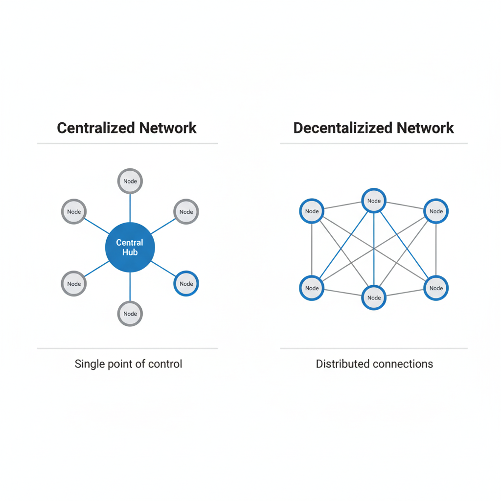
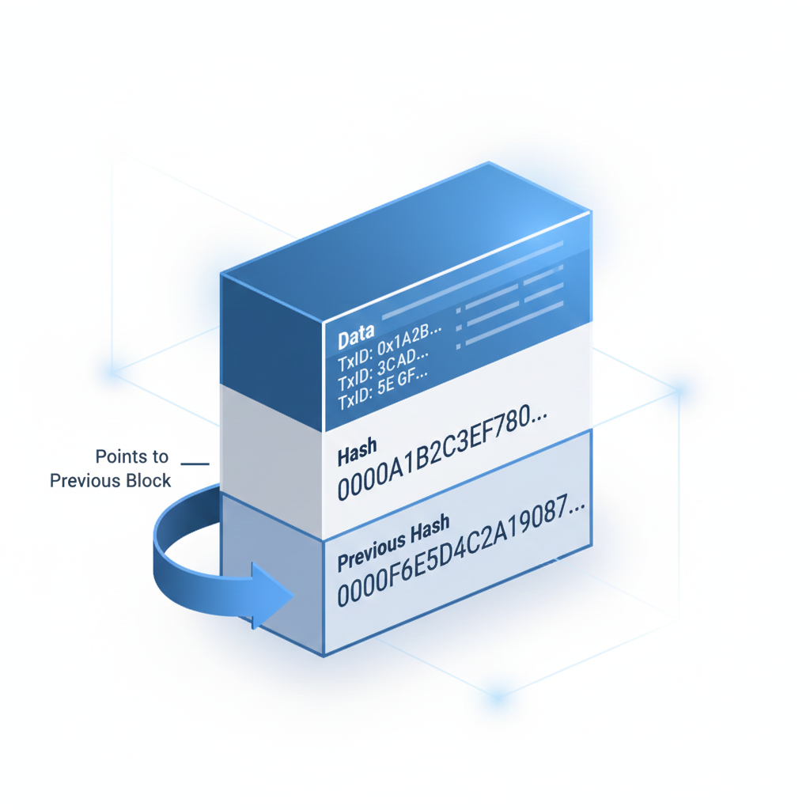
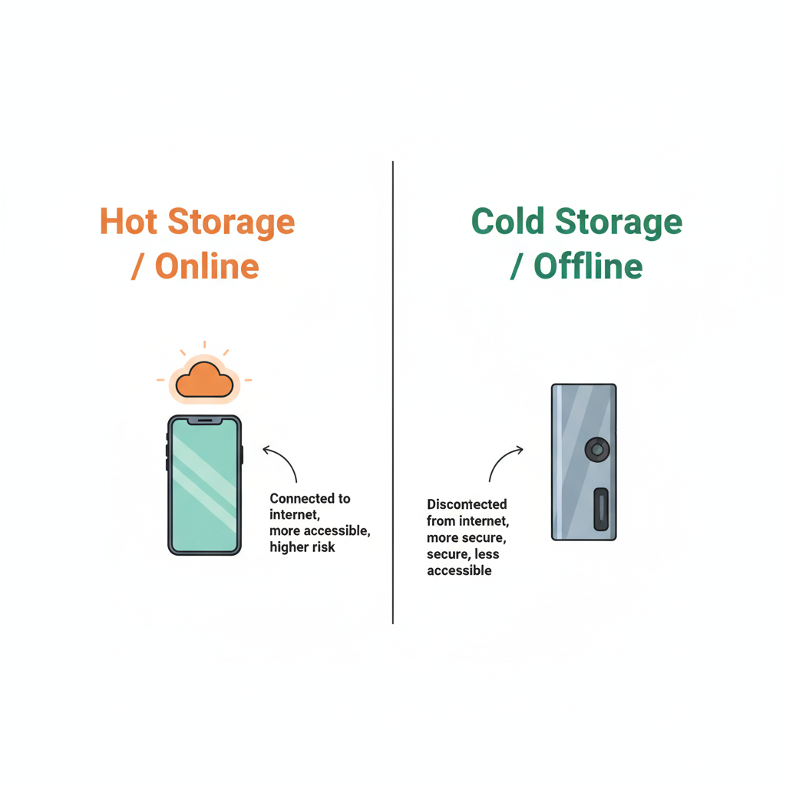

While cryptocurrency is the most famous application of blockchain, it is only one part of a much larger ecosystem. To grasp the fundamentals, one must look past the price charts and focus on the architecture of decentralization. This shift from central authority—like banks or governments—to a distributed network of computers is what makes this technology unique.
Table of Contents
What is Blockchain Technology?
A blockchain is essentially a digital ledger that is distributed across a network of computers. In traditional finance, a bank maintains a private ledger. In a blockchain system, there is no central authority. Every computer on the network (node) has access to a copy of the ledger.
The data is structured in "blocks" that are cryptographically linked to the one before it, forming a "chain." This structure ensures immutability; once a block is added, changing the information within it is computationally nearly impossible. This technology allows for the transfer of value without the need for a traditional middleman.
This topic connects with Stock Market Basics in its attempt to provide a transparent environment for asset exchange.
How a Blockchain Functions
When a transfer is initiated, it is broadcast to the entire network. At this stage, it is "pending" and must be verified to ensure the sender has the necessary funds. Nodes work to validate the transaction based on the protocol’s rules.
Cryptography and Hashing
The security relies on "hashing," which creates a unique digital fingerprint. Each block contains the hash of the previous block. If a single character is altered, the hash changes entirely, breaking the chain. This ensures the history of the ledger remains transparent and tamper-proof.
Consensus Mechanisms: Proof of Work vs. Proof of Stake
Blockchain networks use a "consensus mechanism" to agree on the state of the ledger without a central leader.
Proof of Work (PoW)
PoW, used by Bitcoin, requires "miners" to solve complex mathematical puzzles. The first to solve it adds the block and receives a reward. This process is highly secure but requires significant energy.
Proof of Stake (PoS)
PoS is energy-efficient, relying on "validators" who "stake" or lock up their cryptocurrency. The network selects validators based on their stake. If a validator acts dishonestly, they lose their staked assets.
Defining Cryptocurrency and Digital Assets
Cryptocurrency is a digital asset that uses cryptography for security. Most are not issued by a government. They are native to their respective blockchains and serve various purposes, from a medium of exchange to "tokens" representing a share in a project or service.
Bitcoin, Ethereum, and the Crypto Ecosystem
Bitcoin: Digital Gold
Created in 2009, Bitcoin was the first cryptocurrency. It is designed as a decentralized, peer-to-peer electronic cash system. Over time, it has evolved into a "store of value" due to its limited supply of 21 million coins.
Ethereum: The Global Computer
Launched in 2015, Ethereum enables "smart contracts"—self-executing code that allows developers to build decentralized applications (dApps) on the blockchain. This has led to the rise of DeFi (Decentralized Finance) and NFTs (Non-Fungible Tokens).
You may also want to read Risk Management Fundamentals to understand how these assets fit into a broader perspective.
Digital Wallets and Security Fundamentals
Cryptocurrency is accessed through a digital wallet consisting of a public key (like an email address) and a private key (like a password). Anyone with your private key has total control over your assets.
Hot and Cold Storage
A "hot wallet" is connected to the internet, providing convenience but higher risk. A "cold wallet" is a hardware device kept offline, offering the highest level of security for long-term storage.
Market Risks and Volatility
Cryptocurrency markets are subject to extreme fluctuations. Prices can change rapidly based on news, regulation, or sentiment. Unlike traditional markets, these operate 24/7 without pauses.
Regulatory and Technological Risks
Governments are still defining how to regulate these assets. Additionally, while the blockchain is secure, applications built on top may have bugs. Because transactions are irreversible, funds lost to scams or mistakes are usually unrecoverable.
Key Takeaways
- Blockchain is a decentralized, immutable ledger recording data across a network.
- Cryptography ensures data security and links blocks together permanently.
- Consensus mechanisms like PoW and PoS allow nodes to agree without a central authority.
- Bitcoin is a store of value; Ethereum is a platform for smart contracts.
- Private keys are critical; cold storage is the safest long-term security method.
- The market is highly volatile and carries regulatory and technological risks.
Conclusion
Blockchain technology represents a shift in the architecture of trust. It offers a new way to manage value, but requires a high degree of personal responsibility. For beginners, focusing on education and the underlying technology is far more valuable than chasing short-term price movements. As the ecosystem continues to evolve, an informed perspective remains the best tool for navigating the digital asset space.
Educational Disclaimer:
This article is for educational and informational purposes only and should not be considered financial or investment advice. Investing involves risk.